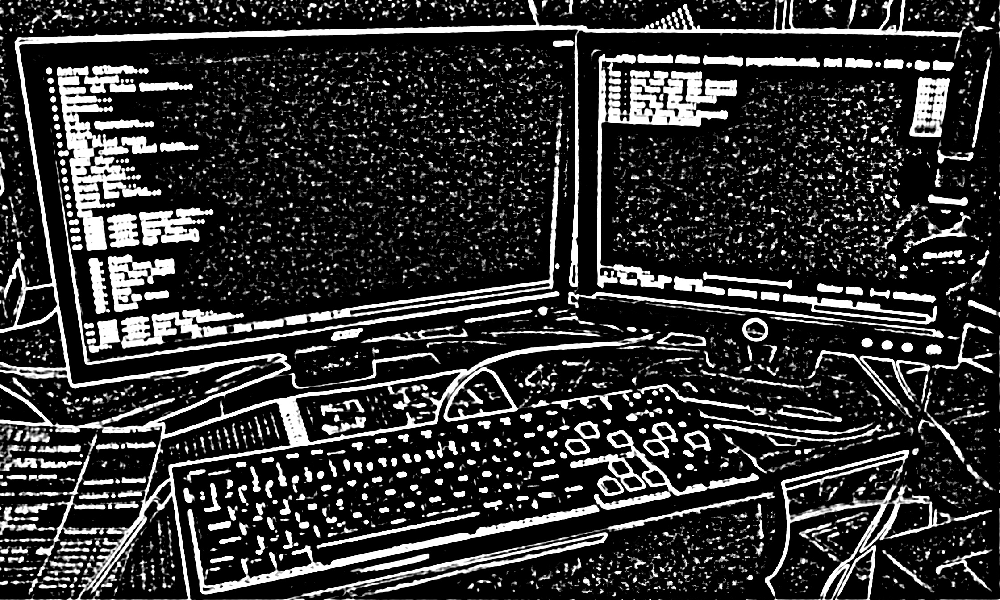
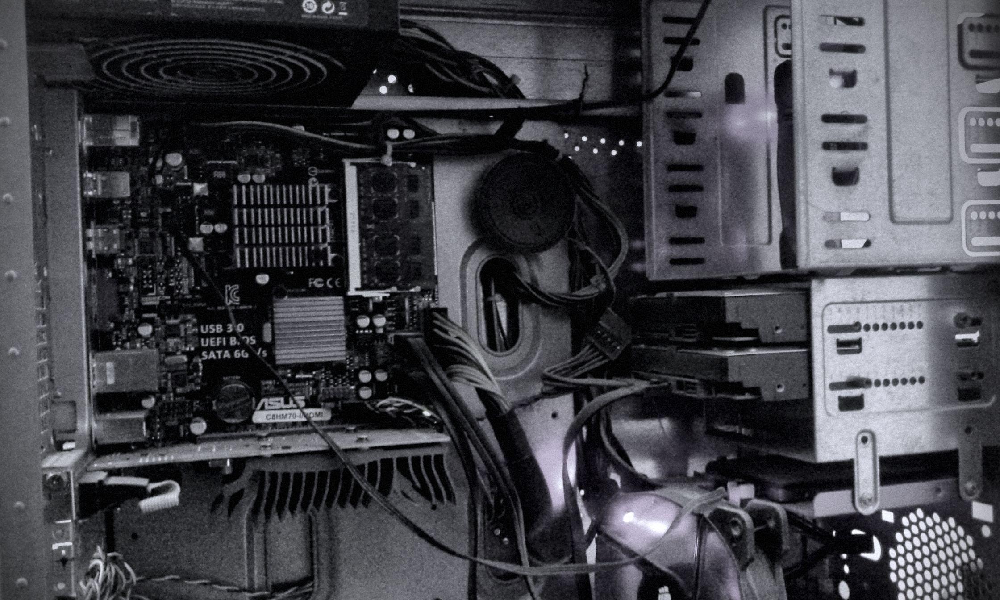
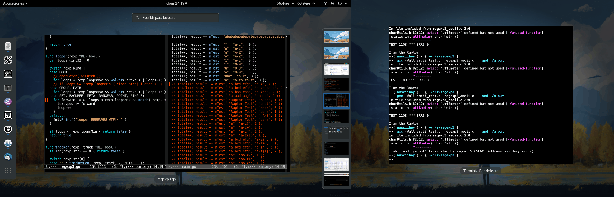
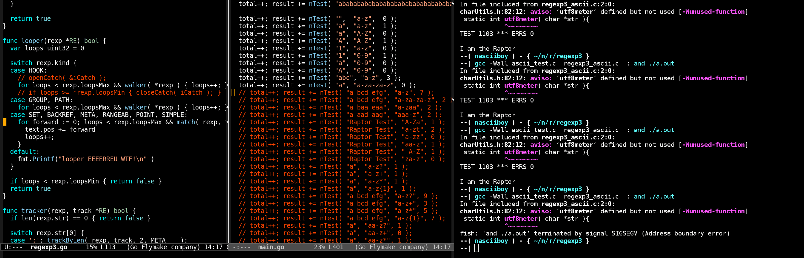

la forma en que trabajo
Me gusta leer sobre la configuracion de otras personas, ver videos reseñando algun teclado, recorrer calles que no conosco…
Despues de algunos años de pruevas, recoleccion y pocas compras, esta es la
configuracion con la que trabajo
(pasar el tiempo es mas apropiado). A
pesar de estar lejos de ser la configuracion de mis sueños, cumple con su labor
dia a dia.
Espero disfruten del cuento

Hardware
El corazon de mi caballo de batalla, es una placa de gama baja de la marca asus, el modelo es C8HM70 en formato itx con un procesador (soldado) intel celeron 847 de doble nucleo a 1.1GHz + un puerto PCI ocupado por una grafica asus 210 silent + 2 slots de memoria ram DDR3 de 4GB + dos puertos SATA, uno para un ssd kingston 3k de 240GB, el otro para un hdd wenster digital blue de 1TB (y un hdd de 320GB no conectado).
El gabinete es una herencia de un pc armado que tenia una placa con un pentium 4.
Dos monitores (imagen superior) uno de 1366x768 en 19” y otro 1024x768 15”, ambos con conector vga, uno conectado a la placa y otro a la grafica dedicada.
Un teclado mecanico corsair strafe rgb de switches rojos (con el tiempo, liquidos derramados y una capa de grasa en las teclas, ha venido el cariño… cambiaria los switches por azules o cafes) + un raton logitech inalambrico m185 + gamepad logitech inalambrico f710.
Unos audifonos de diadema (los mas baratos) sony mdr-zx100.
Todo esta alimentado por un UPS CyberPower 750 VA que da unos 25min de respaldo, conectado a una barra de contactos de esas de switch con foco rojo. Por cierto la fuente del equipo es una Cooler Master 450.
Para complementar los utencilios: un cuaderno, una pluma roja y una hoja con la tabla de los operadores de C.

El sistema operativo
Por tres años, Debian fue quien movia el aparato, hasta que la nacion del fuego ataco (monitor extra con vga) y la unica distribucion que hizo funcionar la grafica integrada en conjunto con la dedicada fue (redobles, luego el sonido previo a la aparicon de una creatura destructora) chan, chan, chan, fedora… ademas del regreso del avatar tamben anelo el dia en que Debian o algun Arch esten de nuevo en el disco duro.
El entorno de escritorio… y lo demas
Gnome!
Es minimalista, elegante por defecto y con mi hardware va fenomenal.
Solo tiro de dos extensiones externas, netspeed que muestra en la barra de estado las estadisticas de la red (subida/bajada) y Volume Mixer para controlar el volumen de manera independiente para cada aplicacion

Al princio tenia 4 espacios de trabajo, luego 6, despues 7 y finalmente pase a
10. Cada escritorio tiene su propio atajo de teclado, Super + KP_0..9 para
moverse entre los escritorios y Super + Alt + KP_0..9 para mover ventanas
a un escritorio distinto.
Tambien hay combinaciones para cambiar de una pantalla a otra y aunque suelo
tener solo dos ventanas por espacio de trabajo (una en cada pantalla) dispuse
cuatro combinaciones para cambiar entre las aplicaciones de cada escritorio
Super + Esp, Alt + Tab, Super (derecho) + Enter y Super
(derecho) + Retroceso
Tres espacios de trabajo estan reservados para programacion (Super +
KP_4..6). En estas habita una instancia de Emacs con 5 paneles y una consola
con una o dos pestañas, todo a pantala completa.

Vamos a los siguientes tres espacios (Super + KP_1..3). El primero con un
navegador de ficheros con 5 o mas pestañas (en este espacio suelo ver videos,
visualizar cosas y editar imagenes). El segundo, tiene una terminal donde
escucho musica con moc y un emacs con una lista de mi coleccion musical y las
tareas que realizo (si son parte de un proyecto luego lo utilizo para el
commit). En el tercer espacio estan qbittorrent y thunderbird
El espacio asignado a Super + KP_0 esta reservado para firefox, con pestañas en el
traductor y en general para investigar lo que haga falta
Finalmente los espacios (Super + KP_7..9) son para eventualidades.
Recientemente en Super + KP_9 puse un emacs dedicado a erc, elfeed, eww y un
firefox abierto en reddit.
Por comodidad trato de utilizar el raton lo menos posible, su uso esta limitado a firefox y aplicaciones graficas
En el pasado cuando utilizaba solo un monitor (de “15) tenia que sobreponer las aplicaciones de extravagantes e incomodas formas, ahora cada una tiene su propia pantalla en su propio espacio de trabajo y combinacion, de esta forma puedo pasar de un lado a otra automaticamente sin pensarlo demasiado.
Teclado
El teclado tiene una distrubicion en lenguaje ingles mapeado como programmer dvorak con estas teclas modificadas
Caps LockesControl(izquierdo)- Sobre
EnterestaCaps Lock - Al lado del nuevo
Caps LockestaControl(Derecho) - Donde estaba
Control(izquierdo) esta| - Donde estaba
Control(derecho) esta@ Superderecho tambien esta mapeado comoSuperizquierdo
La modificacion no esta hecha mediante un mapeo del teclado, en esencia porque desconosco de donde demonios tome gnome el mapeo. Como el teclado no es un teclado al uso, es mas bien un tablero con muchas teclas y luces independientes, requiere un software dedicado para funcionar llamado ckb, desde el cual realice el cambio.
Nota: El teclado tambien fuciona sin software
Al principio utilizaba el mapeo en español y pulsaba las teclas con dos dedos, luego aprendi mecanografia en mapeo qwerty español, despues salte a qwerty ingles y efectivamente es mas comodo para programar, no se si lo habras notado, pero qwerty requiere mover los dedos a posiciones poco practicas asi que investigando un poco pase a programmer dvork en ingles. Luego de 1 año con este mapeo puedo asegurar que es mucho mas comodo, veloz y eficiente, aunque no estoy seguro si sea o no mejor, tener las teclas numericas o los simbolos, supongo que hay que elegir…
Aplicaciones (y Emacs) con atajos especificos
Abras notado que los comandos del escritorio en mi configuracion involucran la
tecla Super, bien, los siguientes atajos no son la exepcion
epara emacs compilado desde el codigoupara emacs optenido desde el repositorio de la distribucionzpara firefoxvpara el visor de documentos pdf (evince)hpara konsoletpara terminix
fin